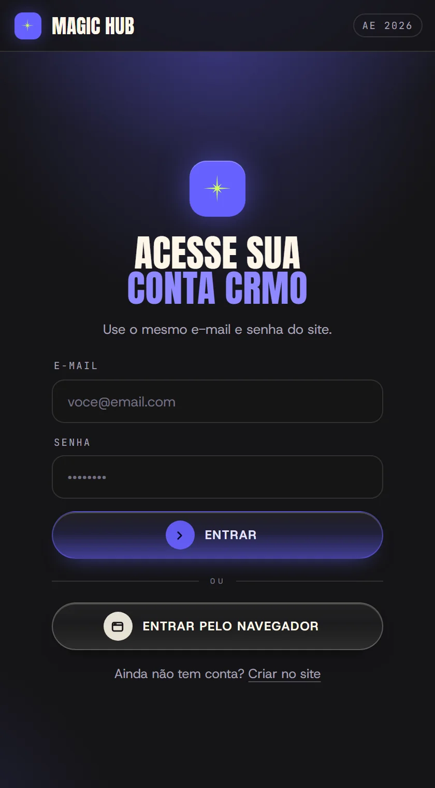

Seus plugins
num download só
Você baixa o Magic Hub uma vez. Os plugins vêm por ele: o painel confere o seu acesso e instala cada um num clique, já na versão mais nova.
Baixar o Magic HubOs seis plugins
Como instalar
Do download
ao primeiro plugin
Uma vez só. Depois disso o Magic Hub cuida das atualizações sozinho.
Magic Hub · Completo
- Acesso liberado para
- voce@email.com
- Validade
- Vitalício
Guarde este e-mail: é o login do Hub.
- Magic Hubpasta
- MagicHub.zxpo painel
- Instalar Magic Hub (Windows).batWindows
- Instalar Magic Hub (Mac).commandMac
- instalar-windows.ps1usado pelo .bat
- LEIA-ME.txto passo a passo
MAGIC HUB Instala o painel no After Effects e no Premiere (2022 ou mais novo). Pasta: %APPDATA%\Adobe\CEP\extensions\com.crmo.hub Pasta: ~/Library/Application Support/Adobe/CEP/extensions/com.crmo.hub Feche o After Effects e o Premiere. Continuar? (S/N) S(s/n) s Pronto. Abra o After Effects ou o Premiere: Janela > Extensões > Magic Hub


Se algo travar
Problemas
comuns
O painel não aparece no menu Extensões
Feche o After Effects e o Premiere por completo e abra de novo. Se ainda não aparecer, rode o instalador outra vez com os dois programas fechados.
Instalei um plugin e ele não abriu
O programa só carrega plugins novos ao abrir. Feche e abra o After (ou o Premiere): a barra verde no rodapé do Hub lembra quais estão esperando.
"Não deu para trocar a versão instalada"
Feche o programa, abra de novo e atualize pelo Hub antes de abrir o painel daquele plugin.
Entrei e o Hub diz que falta o acesso
Confira se entrou com o mesmo e-mail da compra. Em Minha conta dá para ver se o acesso vitalício está ativo.
Como desinstalo o Hub?
Apague a pasta com.crmo.hub em %APPDATA%\Adobe\CEP\extensions no Windows, ou em ~/Library/Application Support/Adobe/CEP/extensions no Mac.